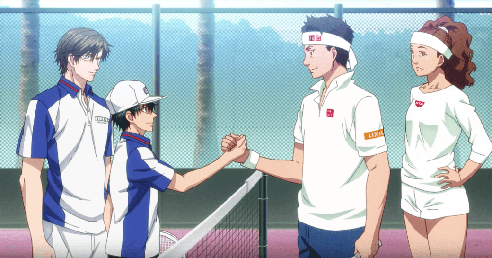
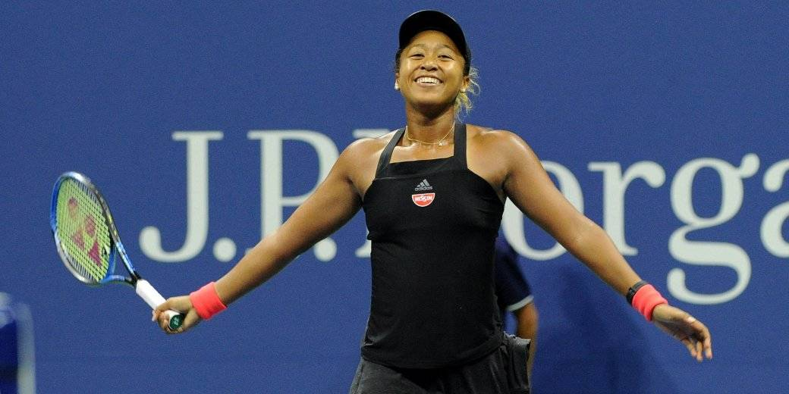

Японский бренд Cup Noodles, известный своей лапшой, и мангака Такэси Кономи (Prince of Tennis) оказались в центре скандала. Всему виной неудачная аниме-реклама, в которой темнокожую звезду тенниса сделали белой.
Речь идет о Наоми Осаке, неоднократной победительнице различных турниров. Она подписала контракт с Nissin Cup Noodle, благодаря чему появилась в аниме-рекламе, сделанной Кономи, вместе с теннисистом Кэем Нисикори. Саму рекламу быстро удалили с YouTube, но скриншоты остались.
Наоми в рекламе справа
Наоми в реальности
Конечно же, в Сети возмутились подобным отношением к темнокожей теннисистке. На Japan Times даже вышла осуждающая статья.
Все, что отличало Осаку от типичного персонажа аниме, ушло, и что же осталось? Типичный персонаж аниме.
Обычные пользователи также не стали молчать.
Real bad from Nissinhttps://t.co/tk4a74vm4F
— Tom Pearson (@tom7p) 23 января 2019 г.
Очень плохо от Nissin.
I just saw that Nissin noodle ad where they drew Naomi Osaka as white to make her look ‘desirable’ and I’m disappointed but I’m 200% not surprised. Just like how they cut miles without the spider mask out from the jp commercial. Japan does not like black people. Water is wet. 😶
— azealia🍌🐟 (@neonfloe) 23 января 2019 г.
Только что увидел рекламу лапши Nissin, в которой они изобразили Наоми Осаку белой, чтобы сделать ее вид «желанным», и я разочарован, но на 200% не удивлен. Так же они вырезали Майлза без маски Человека-паука из японской рекламы <«Через вселенные»>. Япония не любит темнокожих людей. Вода влажная.
and the ethnic insensitivity award for the day goes to nissin japan https://t.co/6D4Hdvj8rj
— ken e. (@kened) 23 января 2019 г.
И награда за этническую нечувствительность уходит Nissin.
Конечно же, Nissin принесла официальные извинения, сказав, что будет «уделять больше внимания диверсити». Забавно, что у компании уже есть вполне нормальная реклама с Осакой, выпущенная еще до Нового года.